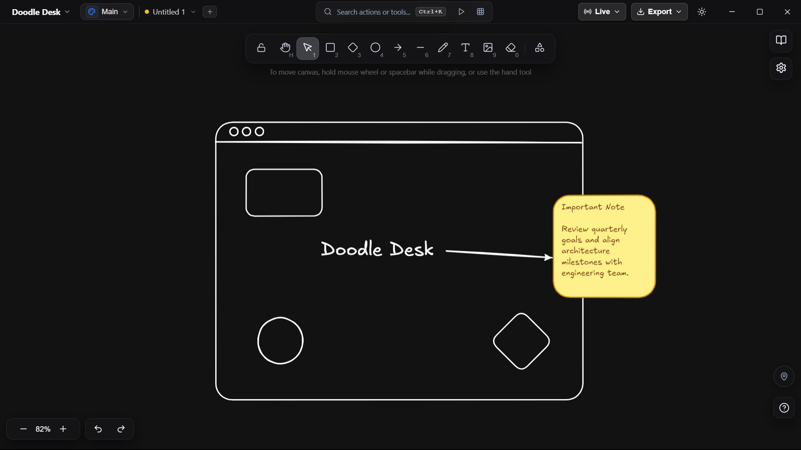

A fast desktop studio for software architectures, algorithmic scratchpads, and rapid vector sketches. Built on a 60 FPS double-buffered canvas engine with zero cloud latency.
winget install DoodleDesk

Drag the interactive slider below to watch rough handwritten whiteboard sketches convert into crisp, editable Doodle Desk vector shapes in real-time.
Every tool is designed for high-density engineering workflows, from double-click bound text on 8 geometries to sandboxed JS evaluations.
Cylinders, stars, diamonds, hexagons, octagons, clouds, capsules, and triangles. Double-click any shape to type centered bound text with automatic word wrap.
In-cell spreadsheet editing with keyboard navigation. Flip directly into 3D study flashcards.
| Component | Latency | Status |
|---|---|---|
| Live | ||
| Live | ||
| Active |
Zero cloud latency, zero server downtime, and permanent file ownership on your local disk.
(Click to flip back)100% Web Audio API procedural synthesis. Real-time spectrum analysis with zero MP3 downloads.
Evaluate algorithms directly inside canvas cards and stamp calculated output into vector text.
Press any key on your physical keyboard to test tactile feedback and tool selection.
Click & drag shapes to throw them with velocity, hit "Radial Blast" for an explosive impulse, or toggle zero gravity.
Architecture choices made for technical diagrams with tens of thousands of objects.
Browsers choke on 5,000 SVG DOM elements. Doodle Desk draws directly to a hardware-accelerated 2D canvas with double-buffering. Smooth 60 FPS panning even on multi-hour system blueprints.
Zero cloud telemetry. No logins, no tracking cookies, no mandatory internet connectivity. Diagrams stay on your local SSD in human-readable open `.doodle` JSON format.
When you collaborate live with peers, Doodle Desk establishes direct browser-to-desktop WebRTC data channels via PeerJS. Your strokes never touch a centralized corporate database.
Packaged cleanly with Electron 33 and modern V8 optimizations. Cold starts in under 600ms, consumes minimal memory, and supports global OS shortcuts natively.
Compare Doodle Desk's native offline architecture against cloud-tethered alternatives.
| Architecture Feature | Doodle Desk | Miro | Excalidraw (Web) | FigJam |
|---|---|---|---|---|
| 100% Offline Desktop App | Native Offline | Cloud Only | Browser Cache | Cloud Only |
| Data Sovereignty & Telemetry | Local Disk Only | Corporate Cloud | Cloud Storage | Figma Cloud |
| 8 First-Class Geometric Shapes | Native Vector | Standard | Basic 3 | Standard |
| Hand-Drawn Tables & 3D Cards | Built-in | Tables Only | None | Tables Only |
| Executable JS Code Runner | Sandboxed Runner | None | None | None |
| Napkin-to-Vector Scanner | Native Pipeline | Paid Add-on | None | Paid AI Plan |
| Peer-to-Peer Live Rooms | Encrypted WebRTC | Server Database | Third-party Relay | Figma Servers |
| Price & Licensing | Free Forever (MIT) | $8–$16 / mo / seat | Freemium Plus | $5 / mo / seat |
Zero telemetry. Cryptographically verified binaries. 100% local-first data sovereignty.
Independent packet capture audit confirms zero background socket connections, zero analytics beacons, and zero telemetry payloads.
Every installer binary is compiled with reproducible builds and accompanied by official SHA-256 hashes to guarantee binary integrity.
e3b0c44298fc1c149afbf4c8996fb92427ae41e4649b934ca495991b7852b855
7f83b1657ff1fc53b92dc18148a1d65dfc2d4b1fa3d677284addd200126d9069
9f86d081884c7d659a2feaa0c55ad015a3bf4f1b2b0b822cd15d6c15b0f00a08
Your architectural diagrams are stored as transparent JSON files. Review pull request diffs directly in GitHub without proprietary lock-in.
{
"formatVersion": 1,
"generator": "Doodle Desk 1.0.0",
"canvas": { "theme": "obsidian", "grid": true },
"elements": [
{
"id": "pod_auth_gate",
"type": "rectangle",
"x": 240, "y": 160,
"elevationTier": 2,
"text": "Auth & Envoy Ingress"
}
]
}Available across Windows, macOS, and Linux. Free forever under permissive MIT open source license.
Complete offline desktop suite with native `.doodle` file associations, hardware-accelerated canvas rendering, and zero background telemetry.
Run without installer. Zero registry footprint • 85.8 MB
M1, M2, M3, M4 native ARM64 performance • 124.5 MB
Intel Macs running Big Sur or later • 128.9 MB
Ubuntu, Debian, Fedora, Arch, and portable AppImage • 134 MB
Inspect signatures, SHA256 hashes, release notes, and source code.
Clear answers regarding privacy, file formats, and offline architecture.